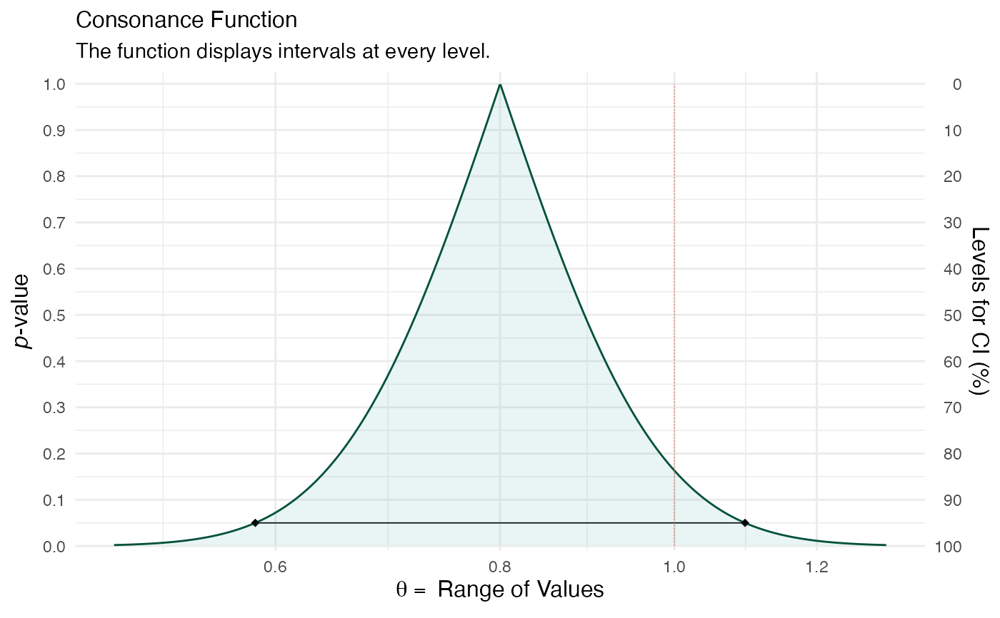
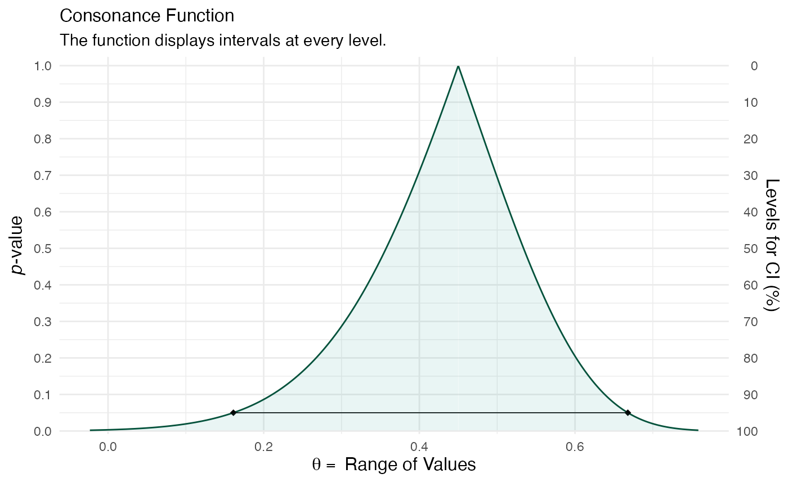

Computes consonance (confidence) intervals at every level directly from
closed-form quantile functions rather than by numerically inverting
confint() thousands of times. This is exact for the stated
sampling model, requires no fitted model object, produces no profiling
messages, and is typically several orders of magnitude faster than the
inversion-based functions. The output object is identical in structure
to that of curve_gen(), so ggcurve(), curve_compare(),
plot_compare(), and curve_table() all work on it unchanged.
curve_analytic(estimate, se = NULL, df = NULL, n = NULL, dist = c("z",
"t", "corr", "var", "prop"), log = FALSE, penalty = NULL, m = NULL,
steps = 1000, table = TRUE)The point estimate. For dist = "corr" this is the
sample correlation coefficient; for dist = "var" the sample
variance; for dist = "prop" the number of successes (a count,
together with n).
The standard error of the estimate. Required for
dist = "z" and dist = "t". Ignored otherwise.
Degrees of freedom. Required for dist = "t".
The sample size. Required for dist = "corr",
dist = "var", and dist = "prop".
The sampling distribution used to construct the intervals:
"z"Normal (Wald) intervals, estimate and se.
"t"Student-t intervals, estimate, se, and df.
"corr"Pearson correlation via the Fisher z-transformation,
estimate (r) and n; the standard error on the z scale is
1/sqrt(n - 3).
"var"A normal-model variance via the chi-squared pivot
(n - 1) s^2 / sigma^2, estimate (s^2) and n.
"prop"A binomial proportion via the Wilson score
interval, estimate (number of successes) and n.
Indicates whether the estimate is on the log scale and the
limits should be exponentiated (as when supplying a log risk ratio, log
odds ratio, or log hazard ratio with its standard error). Defaults to
FALSE. Only available for dist = "z" and dist = "t".
An input to specify whether the intervals should be corrected for multiple comparisons. The default is NULL, so there is no correction. Other options include "bonferroni" and "sidak".
Indicates how many comparisons are being done and the number that should be used to correct for multiple comparisons. The default is NULL.
Indicates how many consonance intervals are to be calculated at various levels. By default, it is set to 1000. Because the limits are computed analytically, large values are cheap.
Indicates whether or not a table output with some relevant statistics should be generated. The default is TRUE and generates a table which is included in the list object.
A list with 3 items where the dataframe of values is in the
first object, the values needed to calculate the density function in
the second, and the table for the values in the third if
table = TRUE.
The analytic approach follows the confidence-distribution framework reviewed by Xie & Singh (2013) and implemented for several estimate types by Infanger & Schmidt-Trucksäss (2019) in the pvaluefunctions package: for each interval level the limits are read off the quantile function of the estimator's sampling distribution.
Xie M, Singh K. Confidence distribution, the frequentist distribution estimator of a parameter: a review. Int Stat Rev. 2013;81(1):3-39.
Infanger D, Schmidt-Trucksäss A. P value functions: An underused method to present research results and to promote quantitative reasoning. Stat Med. 2019;38(21):4189-4197.
Rafi Z, Greenland S. Semantic and cognitive tools to aid statistical science: replace confidence and significance by compatibility and surprise. BMC Med Res Methodol. 2020;20(1):244.
# From a log hazard ratio and its SE, on the ratio scale:
hr <- curve_analytic(estimate = log(0.80), se = 0.16, dist = "z", log = TRUE)
ggcurve(hr[[1]], measure = "ratio", nullvalue = 1)
#> Warning: Using `size` aesthetic for lines was deprecated in ggplot2 3.4.0.
#> ℹ Please use `linewidth` instead.
#> ℹ The deprecated feature was likely used in the concurve package.
#> Please report the issue at <https://github.com/zadrafi/concurve/issues>.

# A correlation from r and n:
rho <- curve_analytic(estimate = 0.45, n = 40, dist = "corr")
ggcurve(rho[[1]])
